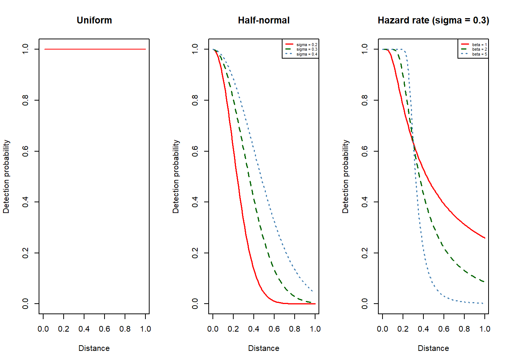

Chapter 2 Methods
2.1 Mark-Recapture
Mark-recapture is a powerful technique used in ecology and wildlife biology to estimate the population size of a specific animal or species within a given area. This method is based on the concept of sampling, marking, and then recapturing individuals from the target population. By utilizing this approach, researchers can extrapolate the population size and gain valuable insights into population dynamics, species abundance, and conservation efforts.
The fundamental principle behind mark-recapture lies in the idea that the probability of capturing an individual within the population is the same for each capture event. Once an individual is captured, it is marked in some way, making it distinguishable from other members of the population. The marked individuals are then released back into the wild, allowing them to mix freely with the unmarked individuals. Subsequently, during the recapture phase, researchers perform another sampling effort, capturing a new group of individuals from the population. The proportion of marked individuals in the recaptured sample allows scientists to estimate the total population size based on the assumption of a closed population.
2.1.1 Closed populations
The Lincoln-Peterson MR estimator is one of the most classic and widely used methods for estimating the population size of closed populations. Proposed independently by Peterson in the 1890s and by Lincoln in the 1920s, this estimator relies on two sampling events: the initial capture, where a subset of the population is marked, and the subsequent recapture, where the marked individuals are identified among the newly captured individuals.
The Chapman mark-recapture estimator is a modified version of the traditional Lincoln-Peterson estimator with less bias and is less affected by zeros.
Chapman MR estimator (1951) \[\hat{N}_{CPM} = \frac{(n_{1} + 1)(n_{2} + 1)}{m_{2}+1}-1\]
where:
\(\hat{N}_{CPM}\) is the estimated population size.
\(n_{1}\) is the number of individuals captured and marked in the first occasion.
\(n_{2}\) is the number of marked individuals recaptured in the second occasion.
\(m_{2}\) is the number of recaptured individuals that were already marked in the first occasion.
The accuracy of this estimate relies on a number of assumptions being met.
Assumption 1. The population is closed to additions and deletions;
In other words, no individuals are added to or removed from the population through birth, death, immigration, or emigration during the study period. An exception is when there are equal proportions of additions or deletions for marked and unmarked individuals during the sampling period. In cases where significant movements occur, potential bias might need to be introduced to the results or more advanced models might be needed to account for population dynamics.
Assumption 2. All animals are equally likely to be captured in each sample;
Sometimes after initial capture, animals may learn to avoid the traps or area where the capture occurred, causing them to be captured less frequently (“trap shy”). The opposite (“trap happy”) may also occur, making them more likely to be captured. Individuals may also inherently different capture probabilities, and if ignored, the resulting abundance estimates are likely to be negatively biased.
Assumption 3. Marks are not lost and not overlooked by the observer
It is possible that marks may fade, fall off, or be lost over time, making individuals indistinguishable from unmarked ones during recapture events. Ensuring durable and effective marking techniques is essential to maintain the integrity of the mark-recapture process and achieve unbiased estimates.
2.2 Distance Sampling
Distance sampling is another widely used method in ecological research or estimating animal abundance and density. Here we focus on conventional distance sampling, the fundamental distance sampling techniques among all.
2.2.1 Line transect sampling
Usually, observers travel along the transect lines that are strategically placed across the study area to ensure coverage of different habitats and representative sampling of the population. Upon detecting an object, they record the perpendicular distance from the line to the identified object. In some cases, additional information, such as the angle of detection or group size are also recorded for the purpose of multiple-covariate distance sampling (MCDS) analysis.
Detection function \(g(x)\)describes the probability of detecting an animal at different distances from the transect lines. A fundamental assumption is that all objects present on the line are detected, i.e. \(g(0)=1\) ; however it is expected that objects become progressively more challenging to detect as their distance from the line increases, leading to a decrease in detection with increasing distance. Commonly used detection functions include uniform, half-normal and hazard rate. Example of adjustment terms include cosine, Hermite polynomial series and simple polynomial series.

Once the detection function is fitted, the estimator can calculate animal density and thus abundance by accounting for the area surveyed and the proportion of animals detected at different distances. The obtained abundance estimates can be extrapolated to the entire study area if the survey design is representative of the entire habitat.
Animal density \(D\) is estimated by: \[\hat{D} = \frac{n}{2wL\hat{P}_a}\]
\[\hat{P}_a = \frac{\int_{0}^{w}\hat{g}(x)dx}{w}\]
where:
\(n\) is the number of animals detected.
\(w\) is the half-width of the strip.
\(L\) is the lengths of transect lines.
\(\hat{P}_a\) is the probability that a randomly chosen animal within the surveyed area is detected.
\(\hat{g}(x)\) is the estimate of detection function.
2.3 Further Reading
Borchers, D.L., Buckland, S.T. and Zucchini, W. (2002). Estimating Animal Abundance: Closed Populations. Springer London. https://doi.org/10.1007/978-1-4471-3708-5
Buckland, S.T., Rexstad, E.A., Marques, T.A. and Oedekoven, C.S. (2015). Distance Sampling: Methods and Applications. Springer International Publish. https://doi.org/10.1007/978-3-319-19219-2